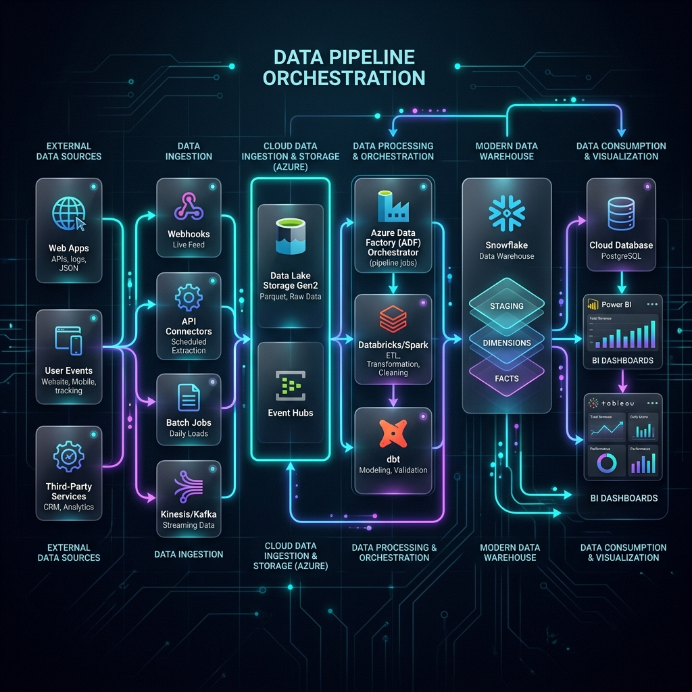
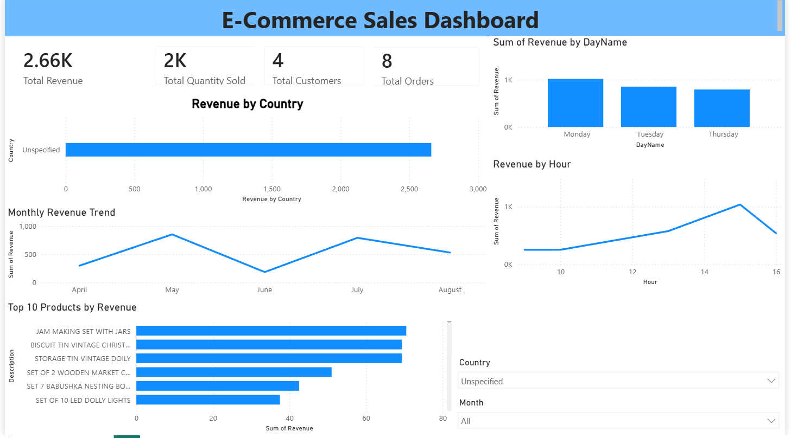

I'm Sahil Pathan
Aspiring Data Analyst & Data Engineer passionate about SQL, Python, Power BI, and Microsoft Azure Cloud. I bridge the gap between complex raw data pipelines and interactive executive insights.

Sahil Pathan
Aspiring Data Analyst & Engineer
About Me
Professional Summary
I am Sahil Pathan, a Computer Science graduate (2024) and MCA postgraduate (2026) passionate about Data Analytics and Data Engineering. I have built a strong foundation in SQL, Python, Excel, Power BI, and SQL Server through real-world projects involving data analysis, visualization, and ETL development. I also have hands-on experience with Azure Data Factory, Azure Databricks, and PySpark, building modern data engineering solutions.
Career Objective & Strengths
My goal is to build a successful career in Data Analytics and Data Engineering by developing scalable data solutions and interactive dashboards. I possess strong skills in SQL, Python, ETL development, Power BI, data visualization, problem-solving, and database management, with a commitment to continuous learning.
- Name: Sahil Pathan
- Education: MCA (2026)
- Location: Kolhapur, Maharashtra, India
- Email: sahilp3036@gmail.com
Education
Master of Computer Applications (MCA)
D.Y. Patil Agriculture and Technical University, Talsande, Kolhapur
Bachelor of Computer Science (BCS)
Shivaji University, Kolhapur
Grade: First Class with DistinctionTechnical Expertise
Data Analytics
Other Analytics Skills
Data Engineering
Other Cloud & Data Tech
Experience Timeline
Data Analytics with Python & Power BI Internship
EduSkills AcademyGained intensive practical experience applying Python libraries (Pandas, NumPy) and Microsoft Power BI for descriptive and diagnostic analytics. Developed data modeling techniques, cleaned real-world unstructured datasets, and built interactive reports utilizing DAX functions.
Google Cloud Generative AI Virtual Internship
SmartBridgeExplored Google Cloud Platform (GCP) Generative AI tools and Large Language Models. Focused on understanding model architectures, prompt engineering foundations, and practical deployment of intelligent solutions inside Google Cloud infrastructure.
Projects Completed
Dashboards Built
Certifications Earned
Technologies Learned
Certifications
Google Cloud Generative AI Virtual Internship
Completed: Mar 2026Data Analytics with Python & Power BI Internship
Completed: Jun 2026Featured Projects

Football Stadiums Data Engineering Project
Extracted stadium details from Wikipedia using Python scraping. Built an end-to-end cloud ETL/ELT pipeline storing raw files in ADLS Gen2, cleansing and transforming the data via PySpark notebooks in Azure Databricks, and syncing into Azure Synapse Analytics. Crafted Power BI reports for executive-level analytics.

E-Commerce Sales Analytics Dashboard
Cleaned, processed, and transformed over 392K+ transactional retail records using Python. Stored and optimized the database inside SQL Server, running SQL scripts to isolate product trends, repeat customers, and order margins. Completed by building an executive Power BI dashboard with critical business KPIs.
Contact Me
Let's Connect
Whether you have an open Data Analyst or Data Engineer role, a project idea, or just want to chat about databases, pipelines, and analytics - feel free to reach out!